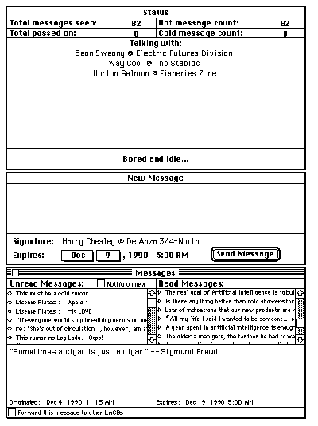
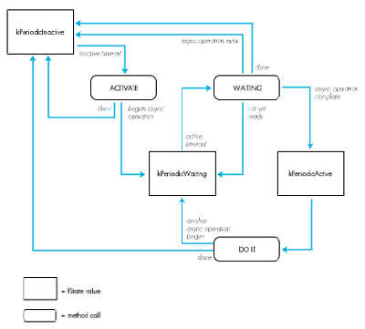

LACS is a program that provides lightweight asynchronous conferencing for
Macintosh® computers connected to the same AppleTalk® network. This article
discusses the techniques used for implementing the asynchronous network operations,
techniques that work well even when the application is running in the background
under MultiFinder®. While the article provides the basic algorithms and techniques,
the Developer Essentialsdisc includes full source code for the entire LACS application.
Every Macintosh includes a local area network--LocalTalk ® . Any two or more
Macintosh computers can easily be configured to communicate with each other, passing
data back and forth to work together as a larger system. There are many applications of
computers that require or benefit from this sort of multiple workstation operation.
Most of these applications involve groups of people working together and are known as
collaborative computing, or computer supported cooperative work. While there are
limited numbers of applications available in this category today, the numbers are
increasing rapidly, and the potential for this genre is exciting.
Similarly, with the advent of MultiFinder and the ability to run programs in the
background while the user continues working on a foreground application, it has
become possible to write applications that operate on the user's behalf even when not
immediately controlled by the user. These sorts of background "daemons" have long
been available on mini, main-frame, and even workstation computers, but are
relatively new to personal computers.
Network and background applications are, by their very nature, asynchronous.
Network applications must communicate with other machines that may be slower than
the local machine or busy with some other task. The other machines may even be
temporarily turned off. Background operations must step very lightly to make sure
that they don't affect the responsiveness of the system as perceived by the user. This
usually involves using asynchronous techniques.
Asynchronous programs are often the hardest to design and develop. Our minds don't
deal well with multi-threaded algorithms. And the Macintosh today has little in the
way of development tools to help in this respect--there are no facilities for
lightweight processes within Macintosh applications, for example.
The Lightweight Asynchronous Conferencing System (LACS) is a program that uses
asynchronous background networking to propagate information from machine to
machine. It distributes messages over a network of locally connected Macintosh
computers. The LACS implementation provides examples of how to do the following:
This article describes LACS, concentrating on the first two of these elements, with
some limited discussion of the other items. You 're encouraged to examine the source
code of LACS (provided on the Developer Essentials disc) in order to uncover more
details.
LACS spreads messages from machine to machine across the local network. It is
designed to run in the background under MultiFinder and communicate quietly with
other machines. It uses the AppleTalk Name Binding Protocol (NBP) to find other
machines to communicate with, and it uses the AppleTalk Data Stream Protocol (ADSP)
to actually exchange messages. When new messages come in, the Notification Manager
is used to alert the user.
LACS is written in Object Pascal using MacApp ®. It uses object-oriented techniques
to simplify the problem of implementing periodic asynchronous functions. To
accomplish this, it uses an abstract superclass that provides a framework for other
classes of the same type.
From the user's point of view, the application consists of three windows: Messages,
New Message, and Status. Figure 1 shows these three windows. To create a new
message, the user simply types in the New Message window and clicks the Send
Message button. The message can be any text the user wants--but no pictures or
graphics in this edition. The application then spreads the message to other locally
connected Macintosh computers. When a new message arrives from another machine, it
appears in the Messages window on that machine. The Messages window displays two
lists of messages, one for those which have yet to be read and one for those which the
user has already read at least once. Only the first few words of each message appear in
the read or unread list. When the user clicks on an entry in one of the lists, the full
text of the message appears in a third section of the window. The Status window
contains information about how many messages have been seen, what other machines
are actively communicating, and so on.
There is more to the program than is covered in this brief description; for example,
users can set expiration dates for the messages they create. You might want to run
LACS to experience what it does and how it goes about it. However, the above
description is sufficient for our purposes here. The basic operation and intent of the
program is quite simple.
ALGORITHM FOR DISTRIBUTING MESSAGES
From the programmer's point of view, LACS maintains a distributed database of
messages across multiple loosely connected computers. The central problem is how to
distribute database updates across the network quickly and efficiently. The solution
comes from a paper published by Xerox PARC: Epidemic Algorithms for Replicated
Database Maintenance. (See references at the end of the article. Seems like everything
interesting comes from PARC, doesn't it?) In fact, LACS was directly inspired by
reading this paper.
In oversimplified form, the algorithm operates as follows: When a new message is
first heard, it is considered "hot." The program then tries to tell other network nodes
the new message. When a node passes on a message, the receiving node tells whether
it's already heard the message or not. The more times the program tries to spread the
message to nodes that have already heard it, the cooler the message becomes.
Eventually it becomes completely cold and the program stops trying to spread the
message to more nodes. The people at Xerox called the action of this algorithm "rumor
mongering."

Figure 1 LACS User Interface
In LACS, the algorithm is implemented on top of the AppleTalk protocols. The Name
Binding Protocol (NBP) is used to register LACS on the network. This allows the
application to find other machines that are interested in exchanging messages. Each
copy of LACS registers itself using the local machine's Chooser name with an NBP type
of "LACS." The program then builds a list of other nodes of type "LACS." Rather than
trying to maintain a list of all the systems on the net (potentially a very large list), it
keeps up to ten nodes with which it communicates directly. These nodes communicate
with up to ten others, they communicate with up to ten others, and so forth.
Periodically, one of the entries in the local list is replaced with another machine
chosen at random, so that the list slowly changes over time. The Apple Data Stream
Protocol (ADSP) is used to communicate between LACS systems. This protocol provides
reliable byte-stream connections, correcting for any errors in transmission across
the network. When a LACS machine decides to spread a message, it makes an ADSP
connection with another LACS node. It exchanges messages with the other machine and
then closes the ADSP connection.
MESSAGE EXCHANGE PROTOCOL
LACS implements a message exchange protocol on top of ADSP's reliable byte stream.
This message exchange protocol consists of separate commands, each having a command
name and a series of parameters. For example, the "Here's a new message" command
includes the message itself, its origination and expiration dates, and other related
information as parameters.
The ADSP session consists of a series of command exchanges. The originating node
starts the conversation. The destination node then responds with a command of its own.
Usually, the conversation starts with an attempt by the originator to pass on a
message; this is known as "pushing." But under some circumstances, the originator
may instead ask the other machine for a message; this is known as "pulling." In that
case, the other machine takes control of the conversation and sends a message. When
the controlling side has nothing further to say, the connection is closed.
The message exchange protocol commands include
The responses "I've seen it" and "I haven't seen it" are actually implemented as
commands as well. But they are only generated in response to a "Here's a new message"
command.
The protocol is very simple and is designed to use only ASCII text in the commands and
responses. This makes it easy for someone to write a program other than LACS that can
become part of the community of message spreaders. For example, a gateway could
spread messages from the local network to a wider area network. Or an archive agent
could collect and save messages.
Internally, LACS keeps track of the number of times it successfully or unsuccessfully
tried to pass on a message. The number of failed attempts is used to determine when a
message becomes cold and also how long to wait until the next attempt to pass it on.
The program actually implements several variations of the basic algorithm, which can
be selected by changing a few global parameters to the program. The default
parameters are
See the paper mentioned earlier from Xerox PARC, the source code of LACS, and the file
"About LACS" on the Developer Essentials disc for complete details of the algorithm
and variations used in LACS.
LACS requires that several activities proceed asynchronously. Since it runs in the
background under MultiFinder, it cannot wait for the completion of a network
operation. It has to release control to the foreground process as quickly as possible. In
addition, there are several semi-independent activities in the program. Making them
dependent on each other, even to the extent that only one operates at a time, would
unnecessarily complicate the design.
The semi-independent, asynchronous activities in LACS include the following:
In order to keep the design manageable, it is important to be able to separate these
activities into distinct code modules. Each individual piece is relatively easy to
understand and implement. It's only when they're taken together that the problem
becomes difficult.
This design separation is provided by building an abstract superclass, TPeriodic, that
implements periodic asynchronous operations. The model for TPeriodic is that
asynchronous periodic activities follow a particular pattern:
The concrete subclasses of TPeriodic include TZoneLookup, TNodeLookup, TGossip, and
TDocumentSaver. Each of these subclasses are discussed in more detail in subsequent
sections.
INTERFACE
The interface to TPeriodic looks like this:
PeriodicStates = (kPeriodicInactive, kPeriodicWaiting,
kPeriodicActive);
TPeriodic = object(TEvtHandler)
fInactiveIdle: longInt; { Idle period when inactive. }
fActiveIdle: longInt;
{ Idle period when waiting for completion. }
fState: PeriodicStates; { Current state. }
procedure TPeriodic.IPeriodic(initialIdle, inactiveIdle,
activeIdle: longInt);
{ Initialize the periodic object. }
procedure TPeriodic.Free; override;
{ Free the periodic object. }
procedure TPeriodic.WaitForAsync;
{ Wait until any asynchronous activity is finished. }
procedure TPeriodic.Kick;
{ Get things moving right now. }
function TPeriodic.DoIdle(phase: IdlePhase): boolean; override;
{ Internal method -- perform idle activities. }
procedure TPeriodic.Activate;
{ Start asynchronous operation.
To be overridden by subclass. }
procedure TPeriodic.Waiting;
{ Check for completion of asynchronous operation.
To be overridden by subclass. }
procedure TPeriodic.DoIt;
{ Take action after completion of asynchronous operation.
To be overridden by subclass. }
end;
STATE MACHINE
TPeriodic implements the state machine shown in Figure 2.

Figure 2TPeriodic State Machine
IPeriodic and Free are called to initialize and free instances of TPeriodic. Kick is
called to start an activity even though the time-out hasn't expired yet. Each subclass
of TPeriodic overrides Activate, Waiting, and DoIt to implement their own
functionality. DoIdle is an internal routine that is discussed later with the
implementation. WaitForAsync is a utility method used by Free to wait until any
outstanding asynchronous operations have completed before freeing the object.
The current state is stored in fState. While a TPeriodic object is waiting for the
time-out to occur, fState is kPeriodicInactive. When the time-out happens, Activate is
called, which sets fState to some new value. If the Activate procedure has started an
asynchronous activity, it sets fState to kPeriodicWaiting. If it has taken some
synchronous action and then wants to go back to sleep, it sets fState to
kPeriodicInactive again. While in kPeriodicWaiting, the method Waiting is called
repeatedly. Waiting's task is to test for completion of the asynchronous activity begun
by Activate. When completion occurs, it sets fState to kPeriodicActive. If no action is
needed after the asynchronous activity, or if the asynchronous activity failed, Waiting
sets fState back to kPeriodicInactive. Finally, when fState is kPeriodicActive, DoIt is
called immediately (no time delay). The DoIt method takes the appropriate actions with
the results of the asynchronous activity, and then sets fState to kPeriodicInactive. The
process then repeats.
The instance variable fInactiveIdle determines the length of time between activations.
The variable fActiveIdle determines the length of time between calls to Waiting when
an asynchronous activity has been started--that is, how often to check if it's finished
yet. These are set by the inactiveIdle and activeIdle parameters to IPeriodic. The
initialIdle parameter to IPeriodic determines the initial time-out to be used-- how
long to wait for the very first activation.
TPeriodic is a subclass of the MacApp TEvtHandler class. IPeriodic installs the
instance in the MacApp cohandler chain. Most of the work is then done by facilities
already built into MacApp. DoIdle, which is called by MacApp software when the
cohandler's time-out occurs, simply decides which of the Activate, Waiting, and DoIt
methods to call. Those methods set fState to determine what to do next. Since Activate,
Waiting, and DoIt are implemented by the subclasses, TPeriodic consists only of the
four methods IPeriodic, Free, DoIdle, and Kick plus one internal utility method,
WaitForAsync. Here is the actual code:
procedure TPeriodic.IPeriodic(initialIdle, inactiveIdle,
activeIdle: longInt);
{ Initialize the object. }
begin
IEvtHandler(nil);
fIdleFreq := initialIdle;
fInactiveIdle := inactiveIdle;
fActiveIdle := activeIdle;
fState := kPeriodicInactive;
{ Install the object in the co-handler chain. }
gApplication.InstallCohandler(self,true);
end;
procedure TPeriodic.Free;
{ Free the object. }
begin
{ First wait for any outstanding operation to complete. }
WaitForAsync;
{ Deinstall ourselves from the co-handler chain. }
gApplication.InstallCohandler(self,false);
{ Free ourselves. }
inherited Free;
end;
procedure TPeriodic.WaitForAsync;
{ Wait until any asynchronous activity is finished. }
begin
while fState = kPeriodicWaiting do Waiting;
end;
function TPeriodic.DoIdle(phase: IdlePhase): boolean;
{ Internal method -- idle the object. }
var fi: FailInfo;
procedure hdlFailure(error: OSErr; message: LongInt);
{ If we fail, reset to inactive. }
begin
fState := kPeriodicInactive;
fIdleFreq := fInactiveIdle;
exit(DoIdle);
end;
begin
DoIdle := false;
if phase = IdleContinue then
begin
CatchFailures(fi,hdlFailure);
{ If we've just timed out, then activate the
object. }
if fState = kPeriodicInactive then Activate
else
begin
{ If we're waiting, see if we're done yet. }
if fState = kPeriodicWaiting then Waiting;
{ If we're done, do something with the
results. }
if fState = kPeriodicActive then DoIt;
end;
{ Figure out the new idle frequency. }
if fState = kPeriodicInactive then
fIdleFreq := fInactiveIdle
else fIdleFreq := fActiveIdle;
Success(fi);
end;
end;
procedure TPeriodic.Kick;
{ Start things up even if it isn't normally time yet. }
begin
fIdleFreq := 0;
end;
In order to maintain its list of AppleTalk zones, LACS contains a TPeriodic subclass
called TZoneLookup. Looking up the list of AppleTalk zones can be done in one of two
ways. The old way involved talking directly to a nearby AppleTalk Router. The newer
and simpler way, which is used in LACS, makes use of AppleTalk Phase 2 calls, leaving
the underlying communication with the Router to the AppleTalk software.
However, the new technique will not work with older versions of AppleTalk (prior to
System 6.0.3). It is important, therefore, to check and make sure that AppleTalk
Phase 2 is available before using TZoneLookup. This test is performed in
TLACSApplication.ILACSApplication, and takes the following form:
{ Check for AppleTalk phase 2. }
if gConfiguration.atDrvrVersNum < 53 then
begin
StdAlert(phNoPhase2);
ExitMacApp;
end;
The interface to TZoneLookup primarily overrides the TPeriodic methods Activate,
Waiting, and DoIt. In addition, it defines several constants, a data type used in the new
AppleTalk calls, instance variables used by TZoneLookup, and the initialization
function IZoneLookup.
const
{ csCodes for new .XPP driver calls: }
xCall = 246;
{ xppSubCodes: }
zipGetLocalZones = 5;
zipGetZoneList = 6;
zipGetMyZone = 7;
type
{ Offsets for xCall queue elements: }
xCallParam =
packed record
qLink: QElemPtr;
qType: INTEGER;
ioTrap: INTEGER;
ioCmdAddr: Ptr;
ioCompletion: ProcPtr;
ioResult: OsErr;
ioNamePtr: StringPtr;
ioVRefNum: INTEGER;
ioRefNum: INTEGER;
csCode: INTEGER;
xppSubCode: INTEGER;
xppTimeOut: Byte;
xppRetry: Byte;
filler: INTEGER;
zipBuffPtr: Ptr;
zipNumZones: INTEGER;
zipLastFlag: INTEGER;
zipInfoField: packed array[1..70] of Byte;
end;
xCallPtr = ^xCallParam;
const
kXPPTimeOutVal = 3; { Re-try XPP attempt every 3 seconds. }
kXPPRetryCount = 5; { For five times. }
kZonesBufferSize = 578; { Size of buffer for zone names. }
kMaxZones = 100; { Maximum number of zones to handle. }
type
TZoneLookup = object(TPeriodic)
fDocument: TLACSDocument; { The document we're looking up for. }
fZoneCount: integer; { How many zones we've found. }
fXPPPBPtr: xCallPtr; { XPP parameter block. }
fZonesBuffer: Ptr; { Input buffer. }
fOurZone: Str32; { The name of our own zone. }
fZones: array [1..kMaxZones] of Str32; { Zone names. }
procedure TZoneLookup.IZoneLookup(aDoc: TLACSDocument;
initialIdle, inactiveIdle, activeIdle: longInt);
{ Initialize the zone lookup object. }
procedure TZoneLookup.Free; override;
{ Free the zone lookup object. }
procedure TZoneLookup.Activate; override;
{ Start a zone list lookup. }
procedure TZoneLookup.Waiting; override;
{ Wait for the zone lookup to complete. }
procedure TZoneLookup.DoIt; override;
{ Process returned zone list. }
end;
INITIALIZATION AND FREEING
During initialization, in IZoneLookup, the current zone list size is cleared out,
emptying the list, and some buffers that are needed for the zone lookup procedure are
allocated:
procedure TZoneLookup.IZoneLookup(aDoc: TLACSDocument;
initialIdle, inactiveIdle, activeIdle: longInt);
{ Initialize the zone lookup object. }
begin
IPeriodic(initialIdle,inactiveIdle,activeIdle);
fDocument := aDoc;
fOurZone := '';
fZoneCount := 0;
{ Allocate memory blocks we'll need later. }
fXPPPBPtr := xCallPtr(NewPtr(sizeof(xCallParam)));
FailNil(fXPPPBPtr);
fZonesBuffer := NewPtr(kZonesBufferSize);
FailNil(fZonesBuffer);
end;
When the TZoneLookup object is freed, it waits for any asynchronous activity to
complete and then deallocates its buffers. If it didn't do the WaitForAsync call, an
outstanding operation might try to write something into one of the buffers after it was
deallocated.
procedure TZoneLookup.Free;
{ Free the zone lookup object. }
begin
WaitForAsync;
DisposPtr(Ptr(fXPPPBPtr));
DisposPtr(fZonesBuffer);
inherited Free;
end;
ZONES LIST REQUEST
When the zone lookup process is started in Activate, two actions are taken. First, the
local zone name is obtained and stored for future use. This is done synchronously,
since it shouldn't take very long. Second, an asynchronous request for a complete list
of zones is issued. The results of the request will be dealt with in DoIt.
procedure TZoneLookup.Activate;
{ Start a zone list lookup. }
var addrBlock: AddrBlock;
ignore: integer;
s: Str255;
begin
{ Let the user know what we're doing. }
fDocument.fStatusWindow.SetStatus(kStatZoneUpdate);
{ Clear out the zone list. }
fZoneCount := 0;
{ Get our zone name. }
with fXPPPBPtr^ do
begin
ioRefNum := xppRefNum; { Driver refNum -41. }
csCode := xCall;
xppSubCode := zipGetMyZone;
zipBuffPtr := @s;
zipInfoField[1] := 0; { ALWAYS 0. }
zipInfoField[2] := 0; { ALWAYS 0. }
end;
{ Send the getMyZone request synchronously (and cross }
{ our electronic fingers it doesn't take long). }
if PBControl(ParmBlkPtr(fXPPPBPtr), false) <> noErr then
fState := kPeriodicInactive
else
begin
{ Update the display to reflect any changes. }
if (s <> fOurZone) and (s <> '') then
begin
fOurZone := s;
fDocument.fNewWindow.GetSignature;
end;
{ Now make a getZoneList request. }
with fXPPPBPtr^ do
begin
{ ALWAYS 0 on first call; contains state info
{ on subsequent calls. }
zipInfoField[1] := 0;
{ ALWAYS 0 on first call; contains state info
{ on subsequent calls. }
zipInfoField[2] := 0;
ioRefNum := XPPRefNum;{ Driver refNum -41. }
csCode := xCall;
xppSubCode := zipGetZoneList;
xppTimeOut := kXPPTimeOutVal;
xppRetry := kXPPRetryCount;
{ This buffer will be filled with packed zone
{ names. }
zipBuffPtr := Ptr(fZonesBuffer);
zipLastFlag := 0;
end;
{ Send off the request. }
ignore := PBControl(ParmBlkPtr(fXPPPBPtr), true);
fState := kPeriodicWaiting;
end;
end;
PERIODIC CHECKING
The Waiting method then checks periodically to see if the result has come in or an
error has occurred.
procedure TZoneLookup.Waiting;
{ Wait for the zone lookup to complete. }
begin
if fXPPPBPtr^.ioResult = noErr then fState := kPeriodicActive
else if fXPPPBPtr^.ioResult < noErr then
fState := kPeriodicInactive;
end;
COLLECTING THE RESULTS
Finally, when the result is available, DoIt is called to record the new zones in the local
list. If there were more zones than fit in this message, another asynchronous call is
made, and the state returns to kPeriodicWaiting. Otherwise, the zone lookup process is
finished.
procedure TZoneLookup.DoIt;
{ Process returned zone list. }
var dCount: integer;
dCurr: Ptr;
ignore: OSErr;
begin
{ Cycle through the returned list. }
dCount := fXPPPBPtr^.zipNumZones;
{ Find out how many returned. }
dCurr := fZonesBuffer; { Put current pointer at start. }
while (fZoneCount < kMaxZones) and (dCount > 0) do
{ Get each zone. }
begin
fZoneCount := fZoneCount+1;
fZones[fZoneCount][0] := chr(dCurr^);
BlockMove(pointer(ord4(dCurr)+1),
pointer(ord4(@fZones[fZoneCount])+1),dCurr^);
dCurr := pointer(ord4(dCurr) + dCurr^+1);
dCount := dCount-1;
end;
{ If there are more to come, do another request. }
if (fZoneCount < kMaxZones) and
(fXPPPBPtr^.zipLastFlag = 0) then
begin
ignore := PBControl(ParmBlkPtr(fXPPPBPtr), true);
fState := kPeriodicWaiting;
end
{ Otherwise, we're all done. }
else fState := kPeriodicInactive;
end;
Finding the NBP names of other LACS systems is handled by class TNodeLookup. This
class uses standard NBP name lookup procedures, and is otherwise similar to
TZoneLookup. Therefore, its implementation is left as an exercise for the reader (or
for the CD- ROM driver, as the full source code can be found on the Developer
Essentials disc). Meanwhile, we will jump straight into the TGossip class.
Being a gossiper (who initiates the communication session) and being a gossipee (who
listens for others who want to communicate with it) are much the same, so they are
implemented as the same class, but with a parameter to IGossip to declare which case a
particular instance is. Two copies of TGossip are instantiated, one to initiate
message-passing sessions over ADSP and one to respond. The TGossip class looks much
the same as the other TPeriodic subclasses:
TGossip = object(TPeriodic)
fDocument: TLACSDocument; { The document we're communicating in. }
fOutgoing: boolean; { Whether this is an outgoing gossiper. }
fDidPull: boolean; { Whether we just did a pull. }
fADSPSocket: integer; { Our socket number. }
fADSP: DSPPBPtr; { The ADSP IO block pointer. }
fCcbPtr: Ptr; { CCB for ADSP. }
fSendQueue: Ptr; { Send queue for ADSP. }
fRecvQueue: Ptr; { Receive queue for ADSP. }
fAttnPtr: Ptr; { Attention pointer for ADSP. }
fADSPData: Ptr; { The data buffer pointer. }
fNTE: ^NamesTableEntry; { Our names table entry. }
procedure TGossip.IGossip(aDoc: TLACSDocument; outgoing: boolean;
initialIdle, inactiveIdle, activeIdle: longInt);
{ Initialize the gossip object. }
procedure TGossip.Free; override;
{ Free the gossip object. }
procedure TGossip.Activate; override;
{ Start a new gossip session (outgoing only). }
procedure TGossip.Waiting; override;
{ Wait for more input or a connection to open. }
procedure TGossip.DoIt; override;
{ Handle new input. }
procedure TGossip.PassiveOpen;
{ Do a passive connection open. }
procedure TGossip.ResetConnection;
{ Reset the connection. }
end;
We'll quickly summarize the straightforward methods of TGossip, and go into detail
only on the central DoIt method. Again, full details can be found in the source code on
the Developer Essentials disc.
INITIALIZATION
IGossip allocates buffers and prepares for connections. If this is for incoming messages
(the outgoing parameter is false), IGossip starts up a listen for a new ADSP connection
(by calling PassiveOpen) and registers the system's name using NBP. If this object is
going to be initiating connections (the outgoing parameter is true), it simply waits for
the first Activate time-out to take action.
INITIATING A CONNECTION
The Activate method is used to initiate a connection with another LACS machine. The
other LACS machine is chosen at random and an ADSP session initiated by issuing an
ADSP active open call. After the connection is open, the rest of the work is done in DoIt.
Note that Activate is never called for instances that are waiting for incoming
connections--they always go straight to the kPeriodicWaiting state since they're
always waiting for another connection from outside.
TESTING FOR COMPLETION
The method Waiting tests for the completion of the last ADSP request, the result of
which is either an opened connection or a completed data transmission. Whether the
connection was initiated by this object or the other communicating system depends
upon whether this is an incoming or outgoing gossip object. And a data transmission
may be either a send or a receive. (A discussion of how data transmissions get started
comes later.)
THE HEART OF TGOSSIP: DOIT
DoIt is called when a network operation has completed. Initially, that operation is the
establishment of a connection. Once the connection is established, the machine that
initiated it needs to generate the first command to be sent; the machine that did not
initiate the connection needs to start up a receive to obtain that command from the
other node. Once the connection is open and a command is sent and received, a response
must be constructed and sent. All of this is done by DoIt.
While this seems like a lot of functionality to cram into one routine, it isn't really all
that bad. Because there are no distractions from other aspects of the communication
activity, and because much of the component functionality is provided by other parts of
the system (by TMessage, for example), all the functionality can be included in one
routine without overloading the programmer who is reading, writing, or maintaining
that code.
The following is a slightly simplified copy of TGossip.DoIt. (See the source code on
theDeveloper Essentials disc for the full implementation.) DoIt decides which of the
possible operations it should perform based on the csCode field of the I/O block.
This field tells what operation was last requested (open, read, or write). The csCode
field is effectively used as another state machine within the state machine already in
use and defined by fState. (State machines tend to be very useful in implementing
asynchronous algorithms.)
If the connection just opened, the initiator must find a hot message to spread, build a
"Here's a new message" command, and start an ADSP write. After the receiving node
reads the command from the connection, the command is passed to
HandleIncomingCommand. That routine builds a reply command, which needs to be sent
via another write. If a write or a non-initiated opening of a connection just occurred,
the receiver starts up an ADSP read.
Most of the real work is done in GetHotMessage, BuildMessage, and
HandleIncomingCommand. GetHotMessage decides what messages to send. BuildMessage
and HandleIncomingCommand implement the message exchange protocol on top of ADSP.
These methods are implemented in other classes of the system, which know more about
those other parts of the application. For example, BuildMessage is in the class
TMessage, which knows all the internal details of a message object.
procedure TGossip.DoIt;
{ Handle new input. }
var r: TMessage;
p: Ptr;
noGood: boolean;
begin
noGood := false;
{ If this is a session open and we're the initiator... }
if (fADSP^.csCode = dspOpen) and fOutgoing then
begin
{ Get a message to send. }
r := fDocument.GetHotMessage;
{ Decide if we've something to send. }
if r <> nil then
begin
{ Generate the appropriate send request. }
with fADSP^ do
begin
p := fADSPData;
reqCount := r.BuildMessageCommand(p);
dataPtr := fADSPData;
eom := 1;
flush := 1;
csCode := dspWrite;
end;
{ Send it. }
if PBControl(ParmBlkPtr(fADSP),true) <>
noErr then
noGood := true;
end
else noGood := true;
end
{ If this is a completed read... }
else if fADSP^.csCode = dspRead then
begin
{ Handle the incoming command, and build a reply if
appropriate. }
with fADSP^ do
begin
reqCount := fDocument.HandleIncomingCommand
(fADSPData,fADSP^.actCount);
dataPtr := fADSPData;
eom := 1;
flush := 1;
csCode := dspWrite;
end;
{ If there's a reply, send it. }
if fADSP^.reqCount > 0 then
begin
if PBControl(ParmBlkPtr(fADSP),true) <>
noErr then
noGood := true;
end
else noGood := true;
end
{ Otherwise... }
else
begin
{ Start up a receive. }
with fADSP^ do
begin
dataPtr := fADSPData;
reqCount := kADSPMaxCommand;
csCode := dspRead;
end;
if PBControl(ParmBlkPtr(fADSP),true) <> noErr then
noGood := true;
end;
{ If we're all done, reset the connection. }
if noGood then ResetConnection
{ Otherwise, wait for the results. }
else fState := kPeriodicWaiting;
end;
It's also possible to use TPeriodic for activities which are not related to the network at
all, for example, to automatically save a document periodically. Since LACS is intended
to be kept running all the time the Macintosh is on, it can accumulate a large number
of changes to its message database over time. The user could periodically issue a
command to save the data base to disk, but it's much nicer if LACS does it
automatically. TDocumentSaver provides that functionality.
When the time-out occurs, TDocumentSaver waits for LACS to be in the foreground and
then saves the document to disk. Saving could occur in Activate, without waiting for the
application to be in the foreground. But saving can potentially take several seconds,
much too long an activity for a background task. On the other hand, the document could
be saved asynchronously, one piece at a time, in the background. But that would have
been difficult to implement, since none of the MacApp existing document read/write
structure could be used. It uses an entirely synchronous implementation.
procedure TDocumentSaver.IDocumentSaver(aDoc: TLACSDocument;
initialIdle, inactiveIdle, activeIdle: longInt);
begin
IPeriodic(initialIdle,inactiveIdle,activeIdle);
fDocument := aDoc;
end;
procedure TDocumentSaver.Activate;
begin
fState := kPeriodicWaiting;
end;
procedure TDocumentSaver.Waiting;
begin
if not gInBackground then fState := kPeriodicActive;
end;
procedure TDocumentSaver.DoIt;
begin
fDocument.Save(cSave,false,false);
fState := kPeriodicInactive;
end;
Each of the periodic objects must be allocated and initialized. In LACS, this happens in
the TLACSDocument initialization methods as follows:
const
{ Document saver: }
kDocSaverInitial = 60*60*30; { 30 minutes. }
kDocSaverInactive = 60*60*30; { 30 minutes. }
kDocSaverActive = 30; { 1/2 second. }
{ Zone lookup: }
kZoneLookupInitial = 0; { Right away. }
kZoneLookupInactive = 60*60*60*4; { 4 hours. }
kZoneLookupActive = 30; { 1/2 second. }
{ Node lookup: }
kNodeLookupInitial = 60*8; { 8 seconds. }
kNodeLookupFastInactive = 60*8; { 8 seconds. }
kNodeLookupSlowInactive = 60*60*20; { 20 minutes. }
kNodeLookupActive = 30; { 1/2 second. }
{ Gossipee: }
kGossipeeInitial = 0; { Right away. }
kGossipeeInactive = 60*60 + 13; { 1 minute. }
kGossipeeActive = 30; { 1/2 second. }
{ Gossiper: }
kGossiperInitial = 60*21; { 21 seconds. }
kGossiperInactive = 60*30 + 27; { 30 seconds. }
kGossiperActive = 30; { 1/2 second. }
var ds: TDocumentSaver;
zl: TZoneLookup;
nl: TNodeLookup;
g: TGossip;
.
.
.
{ Document saver. }
new(ds);
FailNil(ds);
ds.IDocumentSaver(self,kDocSaverInitial,kDocSaverInactive,
kDocSaverActive);
fDocumentSaver := ds;
{ Zone lookup. }
new(zl);
FailNil(zl);
zl.IZoneLookup(self,kZoneLookupInitial,kZoneLookupInactive,
kZoneLookupActive);
fZoneLooker := zl;
{ Node lookup. }
new(nl);
FailNil(nl);
nl.INodeLookup(self,kNodeLookupInitial,kNodeLookupFastInactive,
kNodeLookupSlowInactive,kNodeLookupActive);
fNodeLooker := nl;
{ Gossipee. }
new(g);
FailNil(g);
g.IGossip(self,false,kGossipeeInitial,kGossipeeInactive,
kGossipeeActive);
fGossipee := g;
{ Gossiper. }
new(g);
FailNil(g);
g.IGossip(self,true,kGossiperInitial,kGossiperInactive,
kGossiperActive);
fGossiper := g;
Note that some of the idle times are slightly odd numbers. This is to keep activities
from becoming synchronized--occurring at the same time--and therefore taking a
noticeable amount of processing time within a particular time period.
The rest of LACS is concerned with the internal message database and with the user
interface.
The internal database consists of a collection of objects of class TMessage. Each of these
objects contains a message and includes the text of the message, the date it was created,
the date it is to expire, how many times it has successfully been passed on to other
LACS systems, how many times it was unsuccessfully passed on because the recipient
had already heard it, and so forth. The messages are kept in a TLACSDocument object.
Besides holding the message objects, TLACSDocument knows how to search for hot
messages.
The user interface is handled by vanilla MacApp classes such as TStaticText,
TCheckBox, TTEView, and so on. The only special case is in handling the read and
unread message lists. For this, LACS creates the subclasses TTextListView and
TSortedList to provide a new pair of classes that know about each other and
automatically propagate changes between the two paired objects. When a new object is
inserted in TSortedList, it is immediately added to the TTextListView in the Messages
window.
All of these objects are managed by TLACSDocument, which acts as a central
coordinator for the database and message-passing activities of the system. For
example, TLACSDocument includes HandleIncomingCommand, which decides what
actions to take based on an incoming command from an ADSP connection. As currently
implemented, there is only one TLACSDocument active at a time. However, by
combining the active elements of the database and network into a document object, it is
an easy extension to allow multiple simultaneous databases to be active. This allows for
the possibility of parallel sets of LACS systems divided by topic or security level. It
also opens the door to other types of documents supported by the same
application--archiving or gateway functions, for instance.
The Lightweight Asynchronous Conferencing System (LACS) implements a distributed
database update algorithm in order to spread messages around a local network using
AppleTalk protocols. It is implemented in Object Pascal using MacApp. In order to
accomplish its goals, LACS must implement multiple asynchronous background
activities.
Asynchronous network and background operations tend to be challenging to implement
on the Macintosh. Much of the difficulty involves the inherent problems of dealing with
parallel algorithms-- we humans prefer to deal with one thing at a time.
It is possible, however, to greatly reduce the cognitive burden of implementing this
type of algorithm by providing a proper context for the implementation. LACS does this
by creating an abstract superclass in the MacApp environment. Using this approach,
the problem is isolated from other, irrelevant, parts of the application, and the
individual parts of the particular asynchronous activity are clearly broken out.
This abstract superclass is called TPeriodic. It implements the generic algorithm
"wait for time out; start asynchronous operation; wait for asynchronous operation to
complete; do something with the results; start over." The algorithm is implemented as
a state machine, driven by TPeriodic, but with details supplied by TPeriodic's
subclasses. Specific subclasses may use all or only portions of the state machine.
Using the TPeriodic framework, it becomes quite straightforward to implement classes
for performing zone name lookup, node name lookup, initiating messages, receiving
messages, automatically saving the document to disk, and more. Each individual
function is implemented separately without regard for the other periodic,
asynchronous functions in the system.
In addition to the explanation of the TPeriodic class within this article, it is hoped that
the source code supplied on CD-ROM will serve as an example of how to implement
each of the separate pieces of network functionality listed. Many of them were taken
from example code fragments in the Technical Notes, Sample Code, and elsewhere, but
they are drawn together here into a coherent, working application and integrated into
the MacApp environment.
This program would be roughly half as good as it is if it weren't for Brian Bechtel. He
provided suggestions, encouragement, testing, evangelism, and the ear the Notification
Manager flashes in the menu bar. Thanks also to Michael Gough, who pointed me to the
article from Xerox PARC, which got me started on this whole project in the first place.
And thanks to our early group of testers, who put up with a fair number of flaky
releases. Of course, all of this was done in the very serious pursuit of collaborative
computing research.
For information on collaborative computing see
Irene Greif: Computer-Supported Cooperative Work: A Book of Readings , Margaret
Kaufmann Publishers, Inc., 1988.
For details on the algorithm see
Alan Demers, Mark Gealy, Dan Greene, Carl Hauser, Wes Irish, John Larson, Sue
Manning, Scott Shenker, Howard Sturgis, Dan Swinehart, Doug Terry, Don Woods:
Epidemic Algorithms for Replicated Database Maintenance , Xerox PARC Technical
Report CSL-89-1, January 1989.
For information on protocols see
HARRY CHESLEY Due to a rare psychological impediment, Harry Chesley frequently
finds himself incapable of giving short, simple answers to questions, instead reciting
long stories that are only vaguely related to the original question. To spare you from
having to read about Harry for hours, we took great care not to ask him too many
questions about himself. Despite this cautious approach, we did discover that he has
been at Apple so long that he no longer remembers his official title, that he has been
programming the Macintosh since the 512K came out (and made it possible to do so
without a Lisa), and that the first personal computer he bought was an Apple I (still
buried in the closet somewhere). In the interest of brevity, the long stories behind
each of these facts have been omitted. Even longer stories surround other events of his
past life. He's been an independent Mac software developer (the genesis of PackIt is a
novella unto itself) and worked in a startup company named Metapath and at SRI (don't
even ask). His favorite pastimes are playing with his two-and-a-half year old
daughter (she has her own Macintosh but doesn't yet know how to run MPW ®) and
programming. Given the opportunity, he also enjoys writing about himself in the third
person. *
Thanks to Our Technical ReviewersMary Boetcher, Michael Gough, Kerry Lynn
*